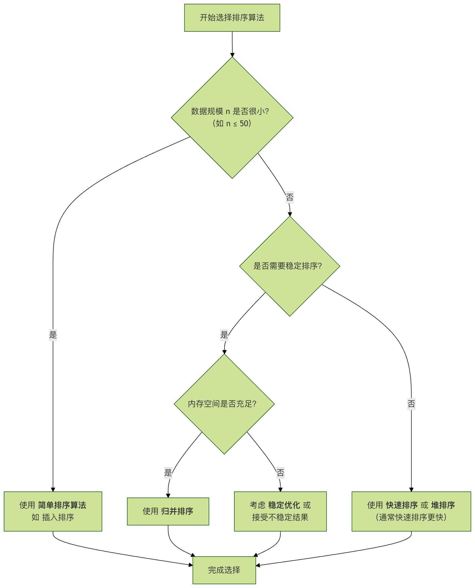

Algoritmos de ordenamiento
Un algoritmo de ordenamiento (inglés: Sorting algorithm) es un algoritmo que puede ordenar una secuencia de datos según un criterio de orden específico; los datos ordenados pueden colocarse en un arreglo ordenado.
Ordenamientose refiere al proceso de reorganizar un conjunto de datos (por ejemplo, un arreglo o lista) según un orden específico (ascendente o descendente).
La base del ordenamiento suele ser una ciertaclave, como el valor numérico, el orden lexicográfico de las cadenas, etc.
El ordenamiento es uno de los problemas algorítmicos más básicos y fundamentales en la informática. Ya sea para organizar una agenda de contactos, analizar calificaciones de exámenes u optimizar consultas de bases de datos, los algoritmos de ordenamiento están por todas partes.
Comprender los diferentes algoritmos de ordenamiento no solo nos ayuda a resolver problemas prácticos, sino que también es una excelente manera de profundizar en las ideas de diseño y análisis de algoritmos.
Clasificación de los algoritmos de ordenamiento
Los algoritmos de ordenamiento se pueden clasificar desde múltiples dimensiones; la forma más común de clasificación se basa en sucomplejidad temporal和y complejidad espacial。
| Dimensión de clasificación | Categoría | Descripción | Algoritmos típicos |
|---|---|---|---|
| Complejidad temporal | Nivel O(n²) | Simple e intuitivo, pero de baja eficiencia; adecuado para datos a pequeña escala. | Ordenamiento de burbuja, ordenamiento por selección, ordenamiento por inserción |
| Nivel O(n log n) | De alta eficiencia; es la opción preferida para procesar datos a gran escala. | Ordenamiento rápido, ordenamiento por mezcla, ordenamiento por montículos | |
| Complejidad espacial | Ordenamiento in situ | Durante el ordenamiento solo se utiliza espacio adicional de nivel constante. | Burbuja, selección, inserción, Shell, montículos, rápido |
| Ordenamiento no in situ | Durante el ordenamiento se requiere espacio adicional proporcional al tamaño de los datos. | Ordenamiento por mezcla, ordenamiento por conteo, ordenamiento por cubos, ordenamiento por radix | |
| Estabilidad | Ordenamiento estable | El orden relativo de los elementos iguales se mantiene después del ordenamiento. | Burbuja, inserción, mezcla, conteo, cubos, radix |
| Ordenamiento inestable | El orden relativo de los elementos iguales puede cambiar después del ordenamiento. | Selección, Shell, montículos, rápido |
Explicación de conceptos clave:
- Complejidad temporal: mide la tendencia del tiempo de ejecución del algoritmo a medida que crece la cantidad de datos.
- Complejidad espacial: mide la cantidad de espacio de almacenamiento adicional necesario durante la ejecución del algoritmo.
- Estabilidad: indica si la relación de precedencia entre elementos con valores iguales se mantiene después del ordenamiento. Esto es muy importante en el ordenamiento por múltiples claves.
El siguiente diagrama de flujo muestra cómo realizar una selección preliminar entre varios algoritmos clásicos según diferentes escenarios de necesidad:

Algoritmos de ordenamiento básicos de nivel O(n²)
Estos algoritmos tienen una idea simple y son el punto de partida para comprender la lógica del ordenamiento.
Ordenamiento de burbuja
Idea principal: repetir el "recorrido" de la secuencia a ordenar, comparando dos elementos adyacentes a la vez; si están en el orden incorrecto, los intercambia. Cada recorrido hace que el elemento más grande (o más pequeño) de la parte no ordenada "flote" hacia su posición correcta.
Pasos del algoritmo：
- Compara elementos adyacentes. Si el primero es mayor que el segundo (en orden ascendente), intercámbialos.
- Haz lo mismo con cada par de elementos adyacentes, desde el primer par hasta el último. Después de este paso, el último elemento será el número más grande.
- Repite los pasos anteriores para todos los elementos excepto el último (porque cada ronda determina un elemento final).
- Continúa repitiendo los pasos anteriores con cada vez menos elementos, hasta que no haya ningún par de números que necesite comparación.
Implementación del código：
Ejemplo
"""
Ordenamiento de burbuja (ascendente)
:param arr: lista a ordenar
"""
n = len(arr)
# El bucle externo controla el número de rondas necesarias (n-1 rondas)
for i in range(n - 1):
# El bucle interno realiza la comparación e intercambio de elementos adyacentes
# Después de cada ronda, los últimos i+1 elementos ya están ordenados, por lo que el rango de comparación es de 0 a n-1-i
for j in range(0, n - 1 - i):
if arr[j] > arr[j + 1]: # Si el elemento anterior es mayor que el siguiente
# Intercambia las posiciones de los dos elementos
arr[j], arr[j + 1] = arr[j + 1], arr[j]
return arr
# Datos de prueba
test_data = [64, 34, 25, 12, 22, 11, 90]
print("Arreglo original:", test_data)
sorted_data = bubble_sort(test_data.copy()) # Usa una copia para evitar modificar los datos originales
print("Después del ordenamiento de burbuja:", sorted_data)
Salida:
原始数组: [64, 34, 25, 12, 22, 11, 90] 冒泡排序后: [11, 12, 22, 25, 34, 64, 90]
Análisis de rendimiento：
- Complejidad temporal: mejor caso O(n) (cuando ya está ordenado, se puede lograr mediante optimización), peor caso y caso promedio O(n²).
- Complejidad espacial: O(1), es un ordenamiento in situ.
- Estabilidad: estable.
Ordenamiento por selección
Idea principal: encuentra el elemento más pequeño (o más grande) en la secuencia no ordenada, lo coloca al comienzo de la secuencia ordenada, luego continúa buscando el elemento más pequeño (o más grande) entre los elementos no ordenados restantes y lo coloca al final de la secuencia ordenada. Y así sucesivamente hasta que todos los elementos estén ordenados.
Pasos del algoritmo：
- Estado inicial: toda la secuencia es la zona no ordenada.
- En la ronda i (i comienza desde 0), la zona no ordenada actual es
arr[i...n-1]. De esta zona se selecciona el registro con la clave más pequeñaarr[min_index]。 - 将
arr[min_index]y el primer registro de la zona no ordenadaarr[i]se intercambian. Así,arr[0...i]se forma la zona ordenada. - Después de n-1 rondas, el ordenamiento del arreglo se completa.
Implementación del código：
Ejemplo
"""
Ordenamiento por selección (ascendente)
:param arr: lista a ordenar
"""
n = len(arr)
for i in range(n):
# Supón que el elemento en el índice i actual es el más pequeño
min_index = i
# Busca un elemento más pequeño en el rango de i+1 a n-1
for j in range(i + 1, n):
if arr[j] < arr[min_index]:
min_index = j # Actualiza el índice del elemento más pequeño
# Intercambia el elemento más pequeño encontrado con el elemento en la posición i
arr[i], arr[min_index] = arr[min_index], arr[i]
return arr
# Prueba
test_data = [64, 25, 12, 22, 11]
print("Arreglo original:", test_data)
print("Después del ordenamiento por selección:", selection_sort(test_data.copy()))
Salida:
原始数组: [64, 25, 12, 22, 11] 选择排序后: [11, 12, 22, 25, 64]
Análisis de rendimiento：
- Complejidad temporal: siempre es O(n²), porque sin importar si los datos están ordenados, se requiere realizar comparaciones completas.
- Complejidad espacial: O(1), ordenamiento in situ.
- Estabilidad：Inestable. Por ejemplo, la secuencia
[5, 8, 5, 2, 9], en la primera ronda se intercambia el primer5和2, rompiendo el orden original de los dos5.
Ordenamiento por inserción
Idea principal: mediante la construcción de una secuencia ordenada, para los datos no ordenados se escanea la secuencia ya ordenada de atrás hacia adelante, se encuentra la posición correspondiente y se inserta. Es como cuando ordenamos cartas de juego.
Pasos del algoritmo：
- Considera el primer elemento como la secuencia ya ordenada.
- Toma el siguiente elemento y escanea de atrás hacia adelante en la secuencia de elementos ya ordenados.
- Si el elemento (ya ordenado) es mayor que el nuevo elemento, desplaza ese elemento a la siguiente posición.
- Repite el paso 3 hasta encontrar una posición donde el elemento ordenado sea menor o igual que el nuevo elemento.
- Inserta el nuevo elemento en esa posición.
- Repite los pasos 2 a 5 hasta que todos los elementos hayan sido procesados.
Implementación del código：
Ejemplo
"""
Ordenamiento por inserción (ascendente)
:param arr: lista a ordenar
"""
n = len(arr)
# Comienza desde el segundo elemento (índice 1), porque el primer elemento ya está ordenado por defecto
for i in range(1, n):
key = arr[i] # El elemento actual que se va a insertar
j = i - 1 # El índice del último elemento de la secuencia ordenada
# Escanea la secuencia ordenada de atrás hacia adelante para encontrar la posición de inserción de key
# Al mismo tiempo, desplaza una posición hacia atrás los elementos mayores que key
while j >= 0 and key < arr[j]:
arr[j + 1] = arr[j]
j -= 1
# Inserta key en la posición correcta encontrada
arr[j + 1] = key
return arr
# Prueba
test_data = [12, 11, 13, 5, 6]
print("Arreglo original:", test_data)
print("Después del ordenamiento por inserción:", insertion_sort(test_data.copy()))
Salida:
原始数组: [12, 11, 13, 5, 6] 插入排序后: [5, 6, 11, 12, 13]
Análisis de rendimiento：
- Complejidad temporal: mejor caso O(n) (ya ordenado), peor caso y caso promedio O(n²).
- Complejidad espacial: O(1), ordenación in situ.
- Estabilidad: estable.
- Características: Para datos de pequeña escala o casi ordenados, la ordenación por inserción es muy eficiente. Es el algoritmo al que cambian los algoritmos de ordenación avanzados (como Timsort) cuando el volumen de datos es pequeño.
Algoritmos de ordenamiento eficientes de nivel O(n log n)
Cuando el volumen de datos aumenta, los algoritmos O(n²) se vuelven muy lentos. Los siguientes algoritmos más eficientes son los principales en la práctica de la ingeniería.
Ordenamiento rápido
Idea central：Divide y vencerás. Se elige un elemento pivote; mediante una pasada de ordenación, los registros a ordenar se separan en dos partes independientes, en las que las claves de una parte son todas menores que las de la otra. Luego se continúa ordenando cada una de estas dos partes por separado hasta lograr que toda la secuencia quede ordenada.
Pasos del algoritmo：
- Elegir el pivote: Seleccionar un elemento de la secuencia, llamado "pivote".
- Operación de partición: Reordenar la secuencia de modo que todos los elementos menores que el pivote queden delante, y todos los mayores queden detrás (los iguales pueden ir a cualquiera de los lados). Tras esta partición, el pivote queda en su posición intermedia en la secuencia. Esto se llama operación de partición.
- Ordenación recursiva: Ordenar recursivamente la subsecuencia de elementos menores que el pivote y la subsecuencia de elementos mayores que el pivote.
Implementación del código：
Ejemplo
"""
Ordenación rápida (ascendente) - Función principal
"""
def _quick_sort(arr, low, high):
if low < high:
# pi es el índice de partición, arr[pi] está ahora en su posición correcta
pi = partition(arr, low, high)
# Ordenar recursivamente los subarreglos antes y después de la partición
_quick_sort(arr, low, pi - 1)
_quick_sort(arr, pi + 1, high)
def partition(arr, low, high):
"""
Función de partición, elige el último elemento como pivote (pivot)
:return: el índice de la posición final correcta del elemento pivote
"""
pivot = arr[high] # Elegir el pivote
i = low - 1 # Apunta al final del subarreglo de elementos menores que el pivote
for j in range(low, high):
# Si el elemento actual es menor o igual que el pivote
if arr[j] <= pivot:
i += 1
arr[i], arr[j] = arr[j], arr[i] # Intercambiar
# Colocar el elemento pivote en su posición correcta (i+1)
arr[i + 1], arr[high] = arr[high], arr[i + 1]
return i + 1
_quick_sort(arr, 0, len(arr) - 1)
return arr
# Prueba
test_data = [10, 80, 30, 90, 40, 50, 70]
print("Arreglo original:", test_data)
print("Tras la ordenación rápida:", quick_sort(test_data.copy()))
Salida:
原始数组: [10, 80, 30, 90, 40, 50, 70] 快速排序后: [10, 30, 40, 50, 70, 80, 90]
Análisis de rendimiento：
- Complejidad temporal: Promedio O(n log n), peor caso O(n²) (cuando el arreglo ya está ordenado o en orden inverso, y el pivote se elige inadecuadamente). El peor caso puede evitarse en gran medida eligiendo el pivote aleatoriamente o mediante el método de la "mediana de tres".
- Complejidad espacial: Promedio O(log n) (pila de llamadas recursivas), peor O(n).
- Estabilidad：Inestable。
Ordenamiento por mezcla
Idea central：Divide y vencerásAplicación típica de divide y vencerás. Se combinan subsecuencias ya ordenadas para obtener una secuencia completamente ordenada. Es decir, primero se ordena cada subsecuencia, luego se ordenan las subsecuencias entre sí.
Pasos del algoritmo：
- Dividir: Dividir el intervalo actual en dos partes, es decir, hallar el punto de división.
mid = (low + high)/2。 - Resolver: Aplicar recursivamente a los dos subintervalos
arr[low...mid]和arr[mid+1...high]la ordenación por mezcla. La condición de terminación recursiva es que la longitud del subintervalo sea 1 (se considera que un elemento ya está ordenado naturalmente). - Mezclar: Mezclar dos subintervalos ya ordenados en un solo intervalo ordenado.
Implementación del código：
Ejemplo
"""
Ordenación por mezcla (ascendente) - Función principal
"""
if len(arr) > 1:
mid = len(arr) // 2 # Encontrar el punto medio y dividir el arreglo
left_half = arr[:mid]
right_half = arr[mid:]
# Llamada recursiva para ordenar las dos mitades
merge_sort(left_half)
merge_sort(right_half)
# Mezclar los dos subarreglos ya ordenados
i = j = k = 0
# Comparar los elementos de los subarreglos izquierdo y derecho, colocar el menor en el arreglo original
while i < len(left_half) and j < len(right_half):
if left_half[i] < right_half[j]:
arr[k] = left_half[i]
i += 1
else:
arr[k] = right_half[j]
j += 1
k += 1
# Verificar si quedan elementos restantes (mitad izquierda o derecha)
while i < len(left_half):
arr[k] = left_half[i]
i += 1
k += 1
while j < len(right_half):
arr[k] = right_half[j]
j += 1
k += 1
return arr
# Prueba
test_data = [38, 27, 43, 3, 9, 82, 10]
print("Arreglo original:", test_data)
print("Tras la ordenación por mezcla:", merge_sort(test_data.copy()))
Salida:
原始数组: [38, 27, 43, 3, 9, 82, 10] 归并排序后: [3, 9, 10, 27, 38, 43, 82]
Análisis de rendimiento：
- Complejidad temporal: Mejor, peor y promedio son O(n log n). El rendimiento es muy estable.
- Complejidad espacial: O(n), se necesita espacio adicional del mismo tamaño que el arreglo original para la mezcla.
- Estabilidad: Estable.
Ordenamiento por montículos
Idea central: Utilizando堆la estructura de datos de montículo, se diseña un algoritmo de ordenación. Un montículo es una estructura aproximadamente de árbol binario completo y cumple la propiedad del montículo: el valor del nodo padre es siempre mayor o igual (montículo máximo) o menor o igual (montículo mínimo) que el valor de cualquier nodo hijo.
Pasos del algoritmo：
- Construir el montículo máximo: Construir la secuencia a ordenar como un montículo máximo. En este momento, el valor máximo de toda la secuencia es el nodo raíz en la cima del montículo.
- Intercambiar la cima del montículo con el último elemento: Intercambiar el elemento de la cima (el máximo) con el último elemento; ahora el último elemento es el máximo.
- Ajustar la estructura del montículo: Los restantes
n-1elementos se reconstruyen en un montículo máximo, obteniendo así el segundo valor más grande. Se intercambia con el nuevo último elemento (posición n-1). - Repetirlos pasos 2 y 3, hasta que el tamaño del montículo sea 1; la ordenación se completa.
Implementación del código：
Ejemplo
"""
Ordenación por montículos (ascendente) - Usando montículo máximo
"""
n = len(arr)
# Paso 1: Construir el montículo máximo. Ajustar desde el último nodo no hoja hacia arriba.
# El índice del último nodo no hoja es n//2 - 1
for i in range(n // 2 - 1, -1, -1):
heapify(arr, n, i)
# Pasos 2 y 3: Extraer uno a uno el elemento de la cima (el máximo) y ajustar el montículo.
for i in range(n - 1, 0, -1):
# Intercambiar la cima actual (el máximo) con el último elemento
arr[i], arr[0] = arr[0], arr[i]
# Ajustar los elementos restantes para que vuelvan a ser un montículo máximo; el tamaño del montículo pasa a ser i
heapify(arr, i, 0)
return arr
def heapify(arr, n, i):
"""
Ajustar el subárbol con raíz en i para que sea un montículo máximo
:param arr: arreglo del montículo
:param n: tamaño actual del montículo
:param i: índice del nodo raíz actual
"""
largest = i # Inicializar el máximo como la raíz
left = 2 * i + 1 # Índice del hijo izquierdo
right = 2 * i + 2 # Índice del hijo derecho
# Si el hijo izquierdo existe y es mayor que la raíz
if left < n and arr[left] > arr[largest]:
largest = left
# Si el hijo derecho existe y es mayor que el máximo actual
if right < n and arr[right] > arr[largest]:
largest = right
# Si el máximo no es la raíz, intercambiar y ajustar recursivamente el submontículo afectado
if largest != i:
arr[i], arr[largest] = arr[largest], arr[i]
heapify(arr, n, largest)
# Prueba
test_data = [4, 10, 3, 5, 1]
print("Arreglo original:", test_data)
print("Tras la ordenación por montículos:", heap_sort(test_data.copy()))
Salida:
原始数组: [4, 10, 3, 5, 1] 堆排序后: [1, 3, 4, 5, 10]
Análisis de rendimiento：
- Complejidad temporal: Mejor, peor y promedio son O(n log n).
- Complejidad espacial: O(1), ordenación en el lugar (in situ).
- Estabilidad：Inestable。
Resumen comparativo del rendimiento de los algoritmos
Para comparar de forma más intuitiva las características de los algoritmos anteriores, las resumimos en la siguiente tabla:
| Algoritmo | Complejidad temporal promedio | Complejidad temporal en el peor caso | Complejidad espacial | Estabilidad | Característica principal |
|---|---|---|---|---|---|
| Ordenación de burbuja (Bubble sort) | O(n²) | O(n²) | O(1) | Estable | Simple, ineficiente, adecuado para la enseñanza. |
| Ordenación por selección (Selection sort) | O(n²) | O(n²) | O(1) | Inestable | Pocos intercambios, pero número de comparaciones fijo y elevado. |
| Ordenación por inserción (Insertion sort) | O(n²) | O(n²) | O(1) | Estable | Eficiente para datos a pequeña escala o casi ordenados. |
| Ordenación rápida (Quicksort) | O(n log n) | O(n²) | O(log n) | Inestable | Mejor rendimiento en promedio, es el algoritmo de ordenación más utilizado. |
| Ordenación por mezcla (Merge sort) | O(n log n) | O(n log n) | O(n) | Estable | Rendimiento estable, pero requiere espacio adicional. Se usa a menudo en ordenación externa. |
| Ordenación por montículos (Heap sort) | O(n log n) | O(n log n) | O(1) | Inestable | Ordenación in situ y también O(n log n) en el peor caso. |
Ejercicios prácticos
Después del aprendizaje teórico, la práctica es la mejor forma de consolidar los conocimientos.
Ejercicio 1: Selección e implementación de algoritmos
Dados los siguientes escenarios, ¿qué algoritmo de ordenación elegirías? Justifica brevemente tu respuesta.
- Ordenar un arreglo con 10 números.
- Ordenar una lista enlazada con 1 millón de objetos estudiante por número de estudiante, con requisito de estabilidad.
- Ordenar un arreglo grande en un sistema embebido con memoria limitada.
- Necesidad de obtener en tiempo real los K elementos más grandes de un flujo de datos.
Ideas para la respuesta de referencia：
- Ordenación por inserción. El volumen de datos es pequeño; la ordenación por inserción es simple y favorable a datos casi ordenados, con un factor constante pequeño.
- Ordenación por mezcla. El volumen de datos es grande, se requiere ordenación estable, y la estructura de lista enlazada permite que la operación de mezcla de la ordenación por mezcla se realice en espacio O(1) (solo con modificar punteros).
- Ordenación por montículos. La memoria es limitada, se necesita ordenación in situ, y la ordenación por montículos garantiza O(n log n) incluso en el peor caso.
- Mantener un montículo mínimo de tamaño K. Recorrer el flujo de datos, usando el montículo para mantener los K elementos más grandes actuales. No es una ordenación completa, pero aprovecha las propiedades del montículo.
Ejercicio 2: Depuración y optimización de código
El siguiente ordenamiento de burbuja tiene un pequeño error y una parte mejorable. Localízalos y corrígelos.
Ejemplo
n = len(arr)
for i in range(n):
for j in range(n - 1):
if arr[j] > arr[j]:
arr[j], arr[j+1] = arr[j+1], arr[j]
return arr
Pista：
- Condición de comparación
arr[j] > arr[j]Siempre es falsa. - El límite del bucle interno se puede optimizar, porque después de cada pasada, los elementos finales ya están ordenados.
Ejercicio 3: Implementación práctica
Intenta implementar desde ceroel algoritmo Quicksort, y piensa:
- Si el pivote
pivotsiempre se elige el primer elemento, ¿qué sucede al ordenar un array ya ordenado? - ¿Cómo modificar
partitionla función para que se convierta en 'quicksort de tres vías', que pueda manejar de manera más eficiente arrays con muchos elementos repetidos?
Haz clic para compartir notas
<p style="font-size:14px;">¡Las notas deben ser una extensión del contenido de este artículo!</p><br> <p style="font-size:12px;"><a href="../tougao.html" target="_blank">Envío de artículos, haz clic aquí</a></p> <p style="font-size:14px;"><a href="../w3cnote/runoob-user-test-intro.html" target="_blank">Cómo obtener el código de invitación de registro</a></p> <h3 class="text-muted"><i class="fa fa-info-circle" aria-hidden="true"></i> ¡Antes de compartir notas, debes <a href=";.html" class="runoob-pop">iniciar sesión</a>!</h3> <p><a href="../w3cnote/runoob-user-test-intro.html" target="_blank">Cómo obtener el código de invitación de registro</a></p>